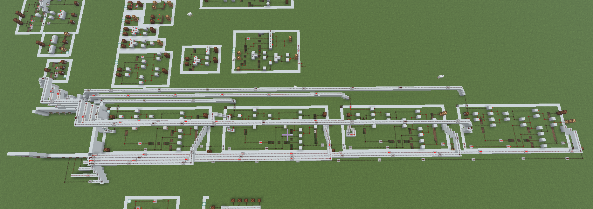
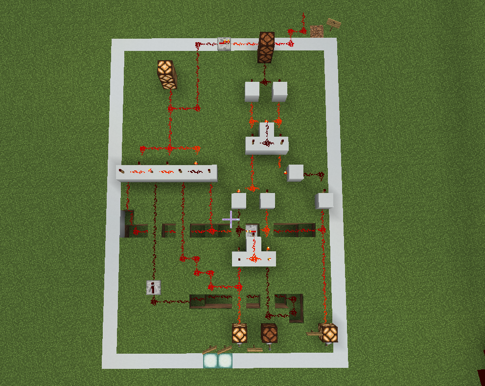
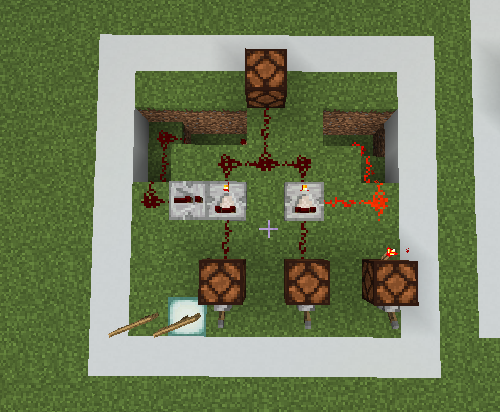
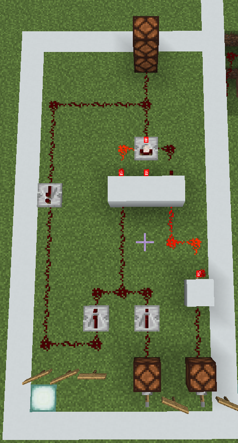
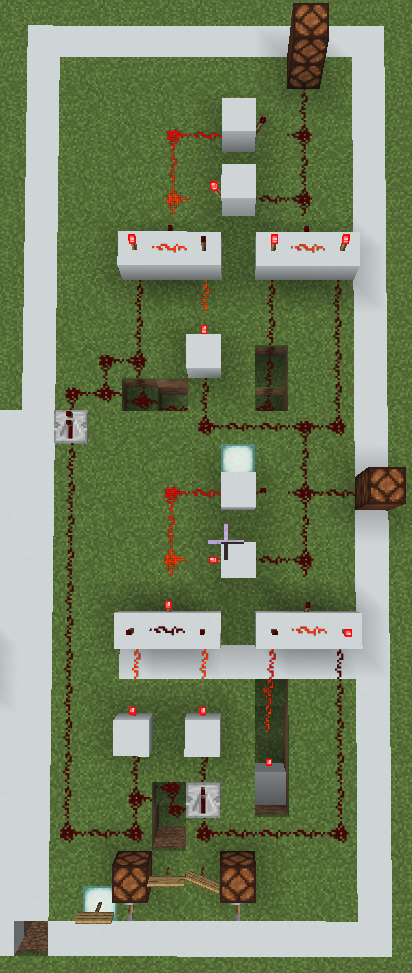
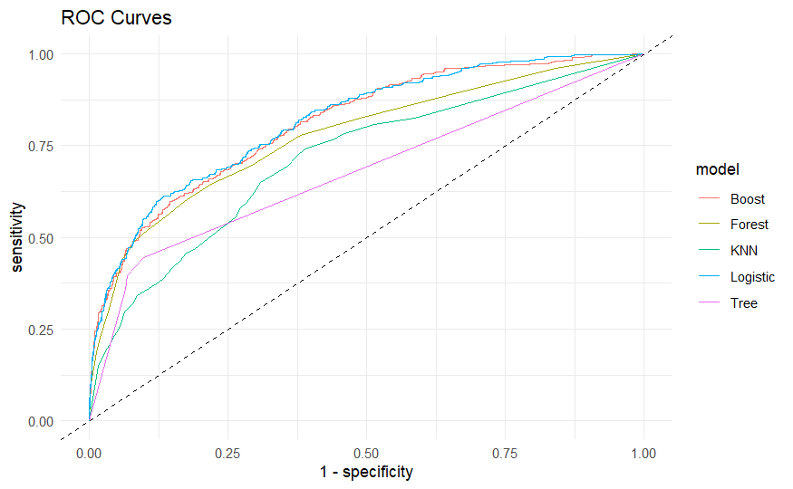

Portfolio
Math / Data Science · Binghamton University
Projects
Built some original CPU components using the in-game wiring system (see 4-bit adder on right).
Minecraft is Turing complete, which means it can simulate any Turing machine (see Wikipedia). This is possible because NAND gates can be created using redstone, which are universal, meaning any logic circuit can be built with them.





Worked with a lung cancer dataset from the Survival, Epidemiology, and End Results (SEER) program to answer three main questions using machine learning models in R.
1. Which variables most affect survival outcomes?
2. Can we divide patients with lung cancer into high/low risk of death?
3. How do models compare for binary classification to predict survival?

Research
As part of research projects with Dr. Kurtz at Binghamton University.
Created and used an "add-coding" method to boost accuracy of small-scale machine learning algorithms.
"Add-coding" involves transforming input features and appending them to the input layer. Tested various transformations including squares, sines, and products of input features.
Education
Math / Data Science major
Calc/diff eq: MATH 230 Honors Calculus · MATH 323 Calc III · MATH 371 ODE
Stats: MATH 447 Probability Theory · MATH 448 Mathematical Statistics · MATH 445 Data Science with R
Analysis: MATH 375 Complex Analysis · MATH 478 Real Analysis I · MATH 479 Real Analysis II
Algebra: MATH 304 Linear Algebra · MATH 404 Advanced Linear Algebra
Other: MATH 330 Number Systems · MATH 461 Topology
CS: CS 120 Programming and Hardware Fundamentals · CS 210 Object Oriented Programming
Future: MATH 472 PDE and Analysis · MATH 501 Probability · MATH 531 Regression